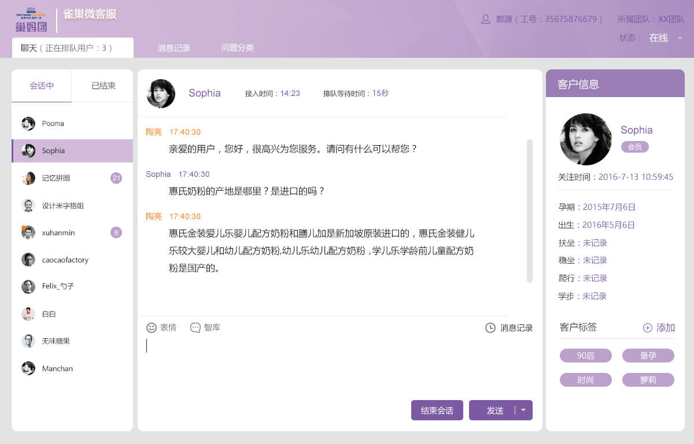
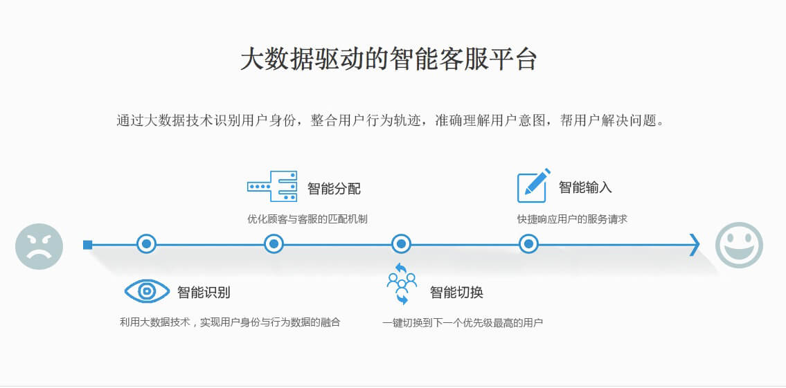

TIME
2016Y 08M 08D

长期以来，NPLUS专注于企业级服务Customer Service领域，帮助企业可以更快速低成本的搭建自己的客户服务系统，使企业可以更加轻松地管理终端客户的服务和支持需求，使用户的问题可以更方便的提交和反馈。
NPLUS凭借在Customer Service领域丰富的项目经验，赢得了客户的信赖与支持。通过大数据驱动智能客服平台和提供以客户为导向的定制化服务，是此次项目合作的两大特色。对此，雀巢营养品（中国）对微信智能客服系统的搭建充满了信心和期待。
同时，我们也期待NPLUS与雀巢营养品（中国）的首次合作，能在Customer Service领域碰撞出更多火花。
